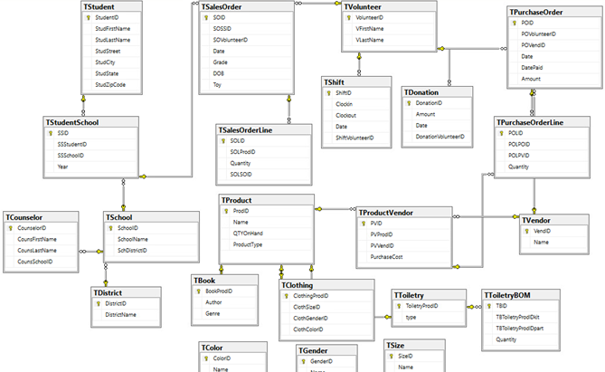

Project for a class through the University of Oklahoma
Collaborating with a team of students and a client, we developed a database for a fictional organization — a school district hosting a clothing and book drive. The client needed a comprehensive database to track data related to the drive, including information about the students benefiting, the volunteers involved, and the items distributed.
Utilizing Lucidchart, a useful online tool, we visually constructed an Entity-Relationship Diagram (ERD) to establish the foundational structure for our database. Lucidchart not only facilitated the design process but also generated the SQL code for our database tables. Employing SQL Server to manage our database, we generated and inserted fictitious data about the students, volunteers, and items.
To improve efficiency and reduce data redundancy and inconsistencies, we implemented normalized relations, dividing the data into multiple tables. Additionally, we created a data dictionary — a valuable reference tool that functions as a map, enhancing data analysis by providing clarity on data types, sample size, and field names. Subsequently, we executed the physical database implementation, employing denormalization techniques where necessary to enhance the read performance of the database.
With the completed database, we could execute SQL queries to address the questions posed by our fictional client, showcasing a clear understanding of the data and its various components.